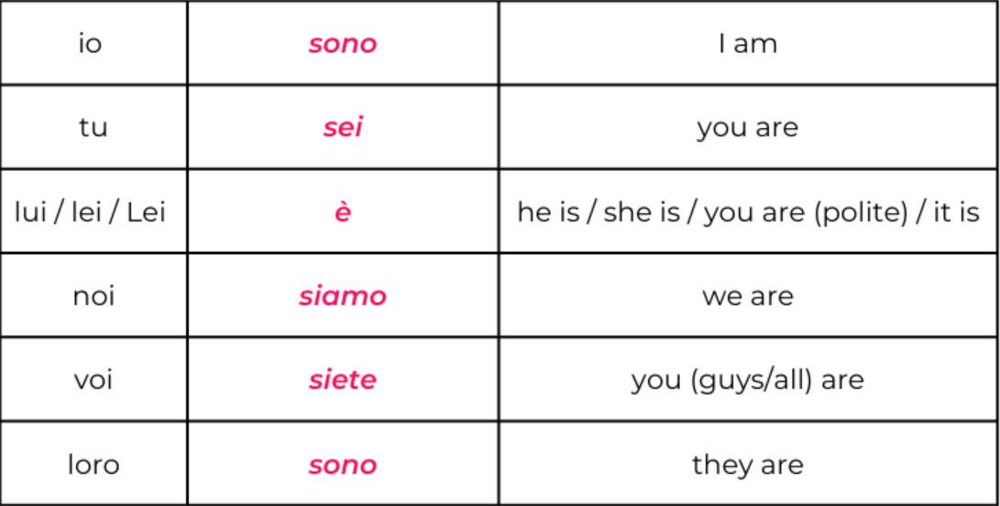
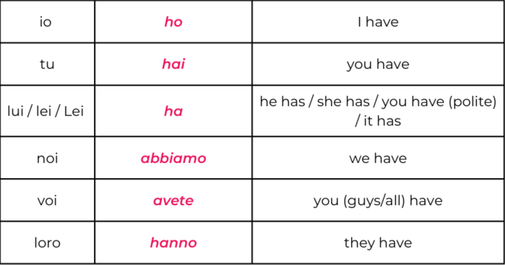
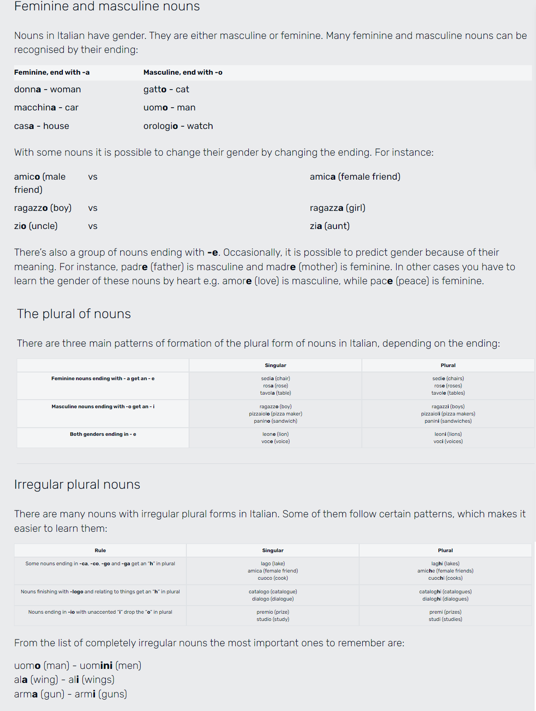
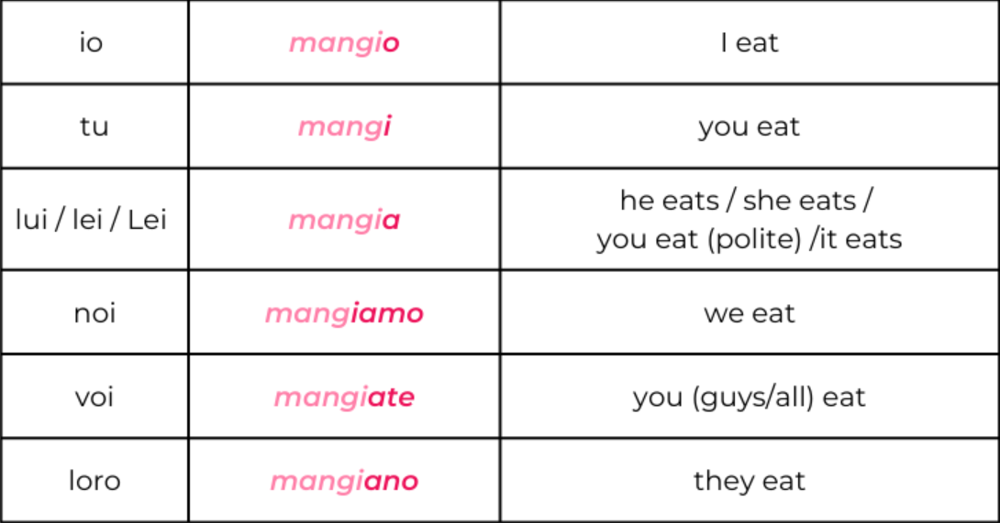
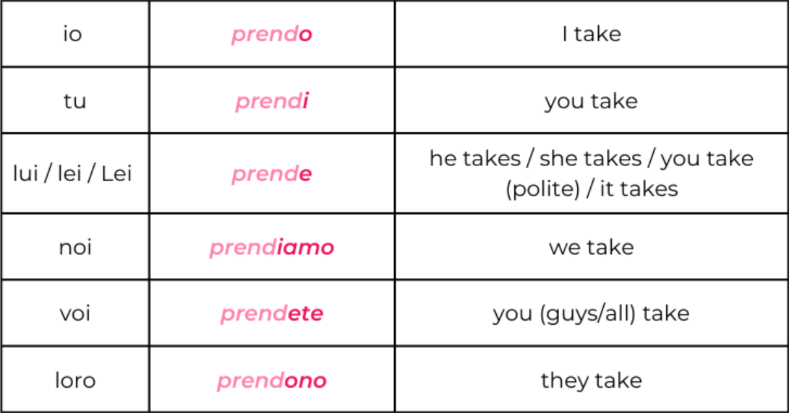
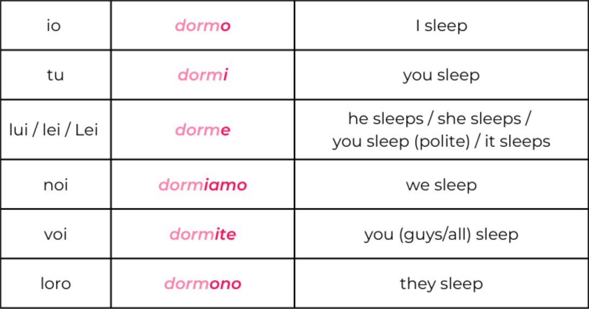

Grammar Essential
Subject Pronouns
Subject pronouns are a type of personal pronoun that indicate who or what is performing the action of a verb.Subject Pronouns

Essere Conjugation
Essere is an Italian verb that means "to be" or "to exist". It's an irregular verb, so it doesn't follow the regular conjugation pattern of other verbs.Essere

Avere Conjugation
Avere is an Italian verb that means "to have". It's an irregular verb, so it doesn't follow the regular conjugation pattern of other verbs.Essere

Nouns
A noun is a word naming people (Marco, girl - ragazza), places (Italy - Italia, Paris - Parigi, school - scuola) or things (desk - scrivania, book - libro).Noun Endings

Definite and Indefinite Articles
Indefinite articles (a/an) vs Definite articles (the)Indefinite Article
Definite Article
Present Tense -ARE verbs
The present tense of a regular Italian verb in -are is formed by dropping the infinitive ending (-are) and adding the appropriate endings to the resulting root (-o, -i, -a, -iamo, -ate, -ano).Example: Mangiare (to eat)

Present Tense -ERE verbs
The present tense of a regular Italian verb in -ere is formed by dropping the infinitive ending (-ere) and adding the appropriate endings to the resulting root (-o, -i, -e, -iamo, -ete, -ono).Example: Prendere (to take)

Present Tense -IRE verbs
The present tense of a regular Italian verb in -ire is formed by dropping the infinitive ending (-ire) and adding the appropriate endings to the resulting root (-o, -i, -e, -iamo, -ite, -ono).Example: Dormire (to sleep)

Possessive Pronouns
Italian possessive pronouns are used in place of nouns to indicate to whom or to what those nouns belong.Italian Possessive Pronouns Explained
Prepositions
Common prepositions in English include in, on, with, to, of and from, and in Italian in, a, di, da, per, con, su, and fra/tra.Italian Prepositions Explained
Gerund Form of Verbs
In Italian, the gerund (il gerundio) is equivalent to the "-ing" verb form in English.Italian Gerund Form of Verbs Explained
Part I
Part II